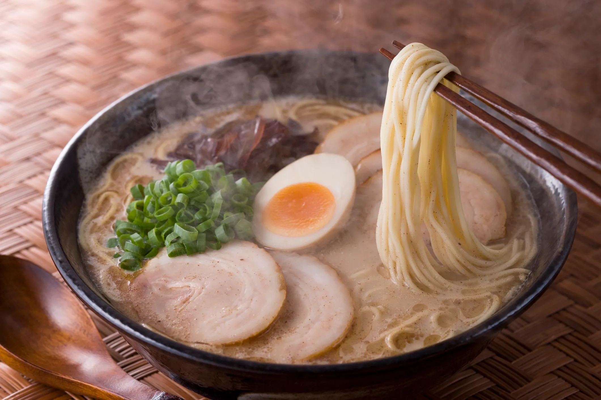

Lámen

Descrição
O lámen é um prato tradicional da culinária japonesa composto principalmente por macarrão à base de trigo, servido em um caldo quente. Esse caldo pode ser preparado de diversas formas, sendo os mais comuns à base de shoyu (molho de soja), miso (pasta de soja fermentada) ou tonkotsu (caldo de ossos de porco). O prato é geralmente acompanhado por ingredientes como fatias de carne de porco, ovos cozidos marinados, algas, cebolinha e brotos de bambu, oferecendo um equilíbrio entre sabores umami, salgados e um toque de doçura.
Originalmente introduzido no Japão por influência chinesa, o lámen tornou-se um ícone da gastronomia japonesa, com variações regionais espalhadas por todo o país. Hoje, ele é apreciado em todo o mundo, tanto em restaurantes especializados quanto em versões instantâneas, que se popularizaram devido à praticidade. Embora seja um prato simples em essência, a complexidade de seu caldo e os ingredientes frescos utilizados podem transformar o lámen em uma refeição rica e reconfortante.
Ingredientes
Caldo
- 1 colher (sopa) de óleo
- 1 cebola pequena cortada em cubos médios (100g)
- 1 cenoura pequena, em cubos médios (120g)
- 1 talo de salsão, em cubos médios
- 2 litros de água
- 1 maço de cebolinha-verde, em canudos (100g)
- 6 rodelas de gengibre (18g)
- 2 dentes de alho amassado
- 2 carcaças de frango grandes (400g)
- 1 sachê de HONDASHI
- 1 pitada de sal
Lámen
- 500g de macarrão para lámen, cozido "al dente"
- 1 massa de peixe cortada em rodelas finas (kamaboko ou naruto) (200g) (opcional)
- 1 cenoura pequena, cozida e cortada em cubos pequenos (120g)
- 1 xícara (chá) de cebolinha-verde, em rodelas finas
- 6 ovos cozidos cortados na metade
Passo a passo
- Em uma panela grande, coloque o óleo e leve ao fogo alto para aquecer. Junte a cebola, a cenoura e o salsão, e refogue por 2 minutos, ou até dourar. Acrescente a água, a cebolinha, o gengibre e o alho.
- Ao levantar fervura, adicione a carcaça de frango, abaixe o fogo e deixe cozinhar por 40 minutos, com a panela destampada. Durante o cozimento, com o auxílio de uma concha, remova o excesso de gordura que se forma na superfície do caldo. Retire do fogo e coe passando por uma peneira.
- Volte para o fogo, junte HONDASHI® e o sal, e misture. Acrescente o macarrão e mexa por 1 minuto, ou até aquecer.
- Distribua em 6 tigelas (domburi), decore com a massa de peixe, a cenoura, a cebolinha e os ovos, e sirva em seguida.